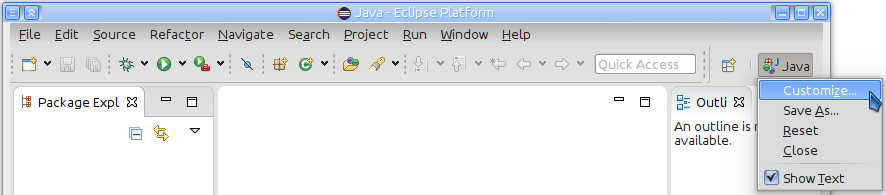
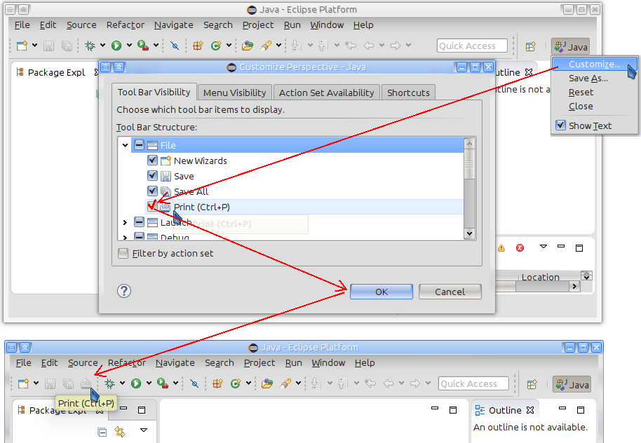
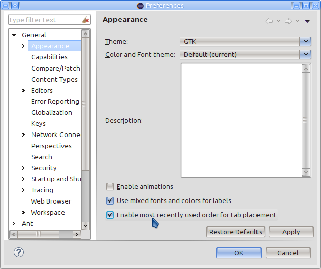
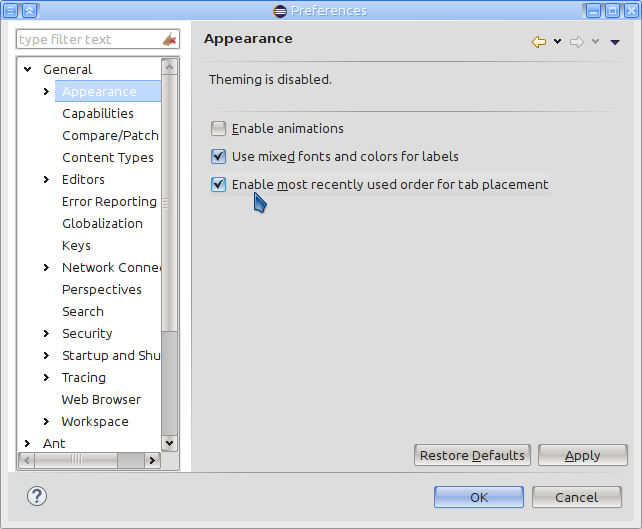
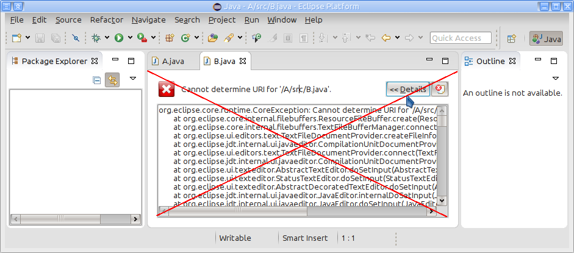

Use the XHTML Markup Validation Service.
Part tabs have now browser-like "Close Tabs to the Left" and "Close Tabs to the Right" menu.

For more information see bug 337588.
The context menu of the current perspective (right click on the current perspective button) has now a Customize... menu entry as a shortcut for the Window -> Perspective -> Customize Perspective menu.

For more information see bug 380233.
The print button on the main toolbar is now hidden by default.
The button can be added back to the toolbar with Customize Perspective dialog. To open this dialog right click on the current perspective button and select Customize... menu.
In the Customize Perspective dialog, in the first Tool Bar Visibility tab, expand the "File" entry, check "Print" entry and select the "OK" button.

For more information see bug 180308.
"Most recently used order for tab placement" (MRU) behavior is now decoupled from selected CSS theme by default.
Since Eclipse 4.2 the editors tab placement order was controlled by the selected CSS theme only, and there was no possibility to change this (except by 3rd party tooling). Now users and Eclipse product owners can define whether the CSS themes or user preferences are controlling the MRU behavior.
By default, the MRU tab placement behavior is now controlled by users, is disabled by default and can be switched on under Window -> Preferences -> General -> Appearance.

Plugin developers and Eclipse product owners can change now via preferences whether CSS theme or user preferences, and which default value MRU behavior should have. The preferences are for "org.eclipse.e4.ui.workbench.renderers.swt" plug-in and the keys are:
- "MRUControlledByCSS" (default is "false"),
- "enableMRUDefault" (default is "false"),
- "enableMRU" (default is "false").
For more information see bug 388476 comment 120.
In case CSS theming is switched off by using "-cssTheme none" command line argument, the "Window -> Preferences -> General -> Appearance" preference page still allows to change CSS independent preferences.

For more information see bug 388476 comment 127.
Previously, if editors were opened in the past Eclipse session, and their project was closed or deleted, an error part was shown if user was trying to switch to such an editor.

With this change the Eclipse IDE now automatically closes all affected editors if their project is closed or deleted, independently if editors were opened in the current or in the past Eclipse session.
For more information see bug 41431.